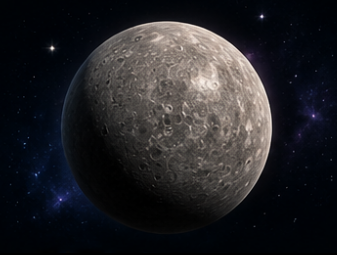
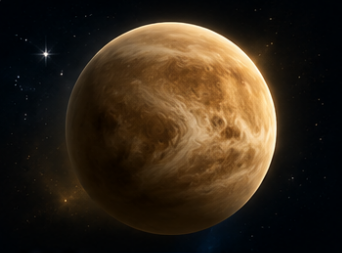
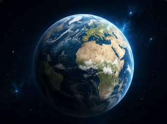
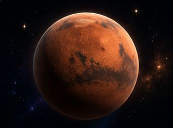
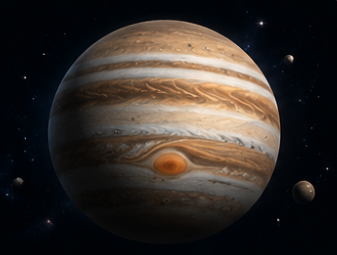
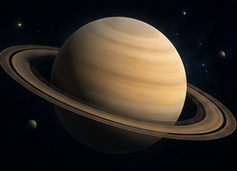
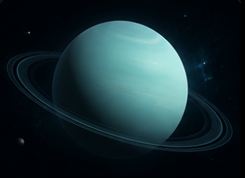
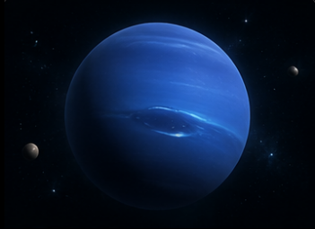

Planet images loaded directly from assets folder

Mercury is the closest planet to the Sun.

Venus is the hottest planet in our solar system.

Earth is the only known planet with life.

Mars is called the Red Planet.

Jupiter is the largest planet in the solar system.

Saturn is famous for its beautiful ring system.

Uranus rotates on its side unlike other planets.

Neptune has the strongest winds in the solar system.